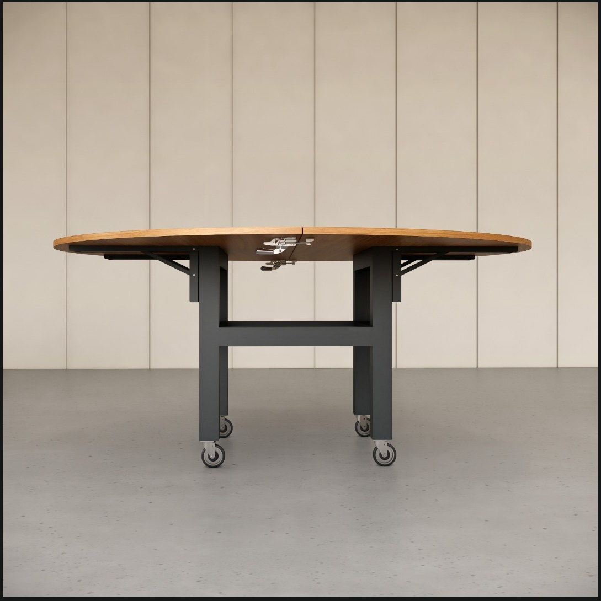
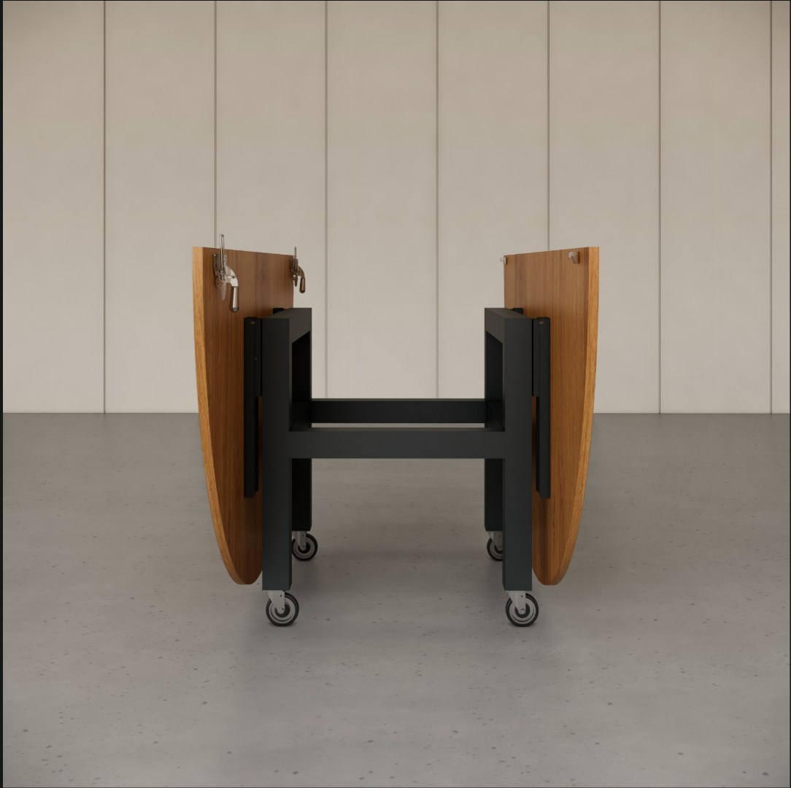

Summer 2026
Folding table
I worked on this folding table in summer 2026. The split top opens into one work surface, and both halves fold down alongside the frame for storage. Casters let the table move in either configuration.
Open and folded

